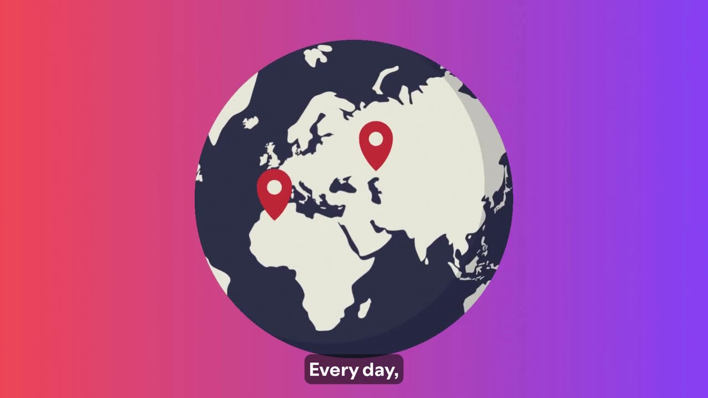
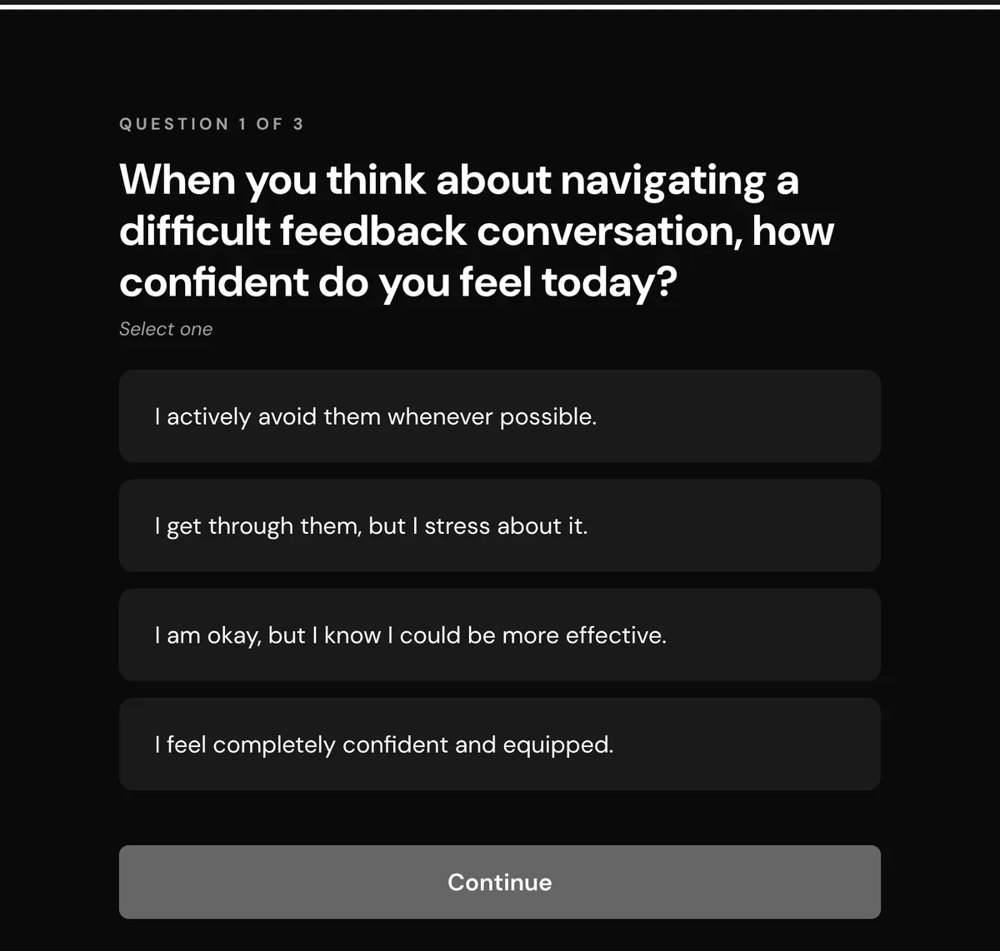
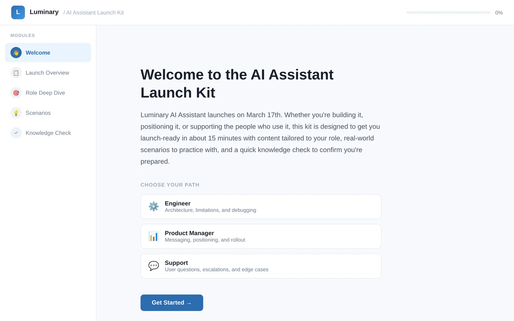

Eight years of onboarding, certification, launch readiness, and compliance programs for global teams, measured in ramp time and error rates.
Most of my client and employer work is under NDA. These are written up with confidential details removed, alongside prototypes you can click through yourself.

An end-to-end onboarding redesign that cut time to proficiency from 60 days to 40, with an eight-part animated series introducing new advisors to the world of support.
Turning GDPR and CCPA requirements into practice on real customer requests for 2,000+ support advisors.
A delta-only upskill path and scenario-based exam that moved a worldwide certified population onto a new standard release.

A four-week, Slack-delivered system that builds everyday feedback habits, adapted to each learner's barrier.

Role-based paths, scenario practice, and a readiness check that take engineers, PMs, and support from “what is this?” to launch-ready.
Same method whatever the audience: the people change, the discipline doesn't.
I start from the decisions someone has to make on the job and design backwards, so practice looks like the real work.
Pilots, item-level exam data, and QA results tell me where my design is failing. I fix it in the open, fast.
I prototype simulations, produce video, and automate the admin that slows learning teams down. I also run an AI enablement pipeline from intake to adoption.
I design learning systems that help global teams understand, adopt, and confidently use complex products and AI.
For 8+ years I've built onboarding, certification, product education, release readiness, and compliance programs for audiences of thousands, across languages and time zones at Spotify, Groupon, and in my current consulting work. I care about what people do differently after learning, so I measure my work in ramp time, error rates, cost, and real performance.
I'm a builder. Alongside learning design, I lead an AI enablement pipeline, taking ideas from intake through evaluation, prototyping, and adoption.
Based in Greater Chicago, working remote first, and open to senior learning experience design, enablement, and AI enablement roles.